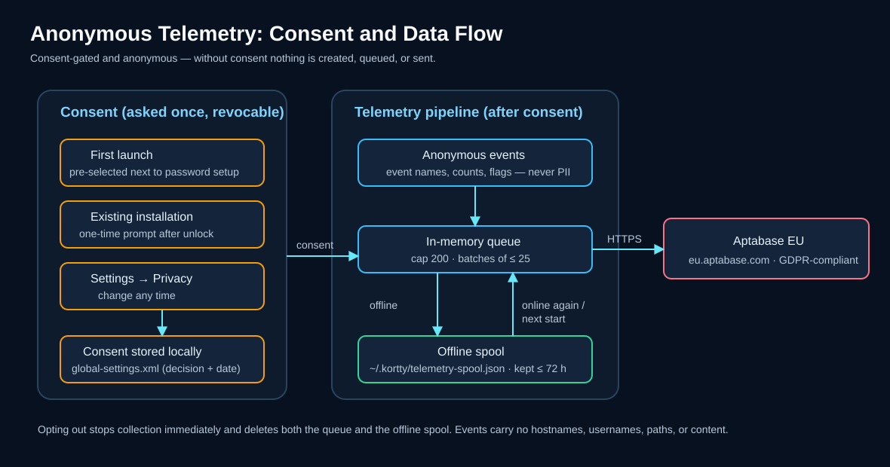
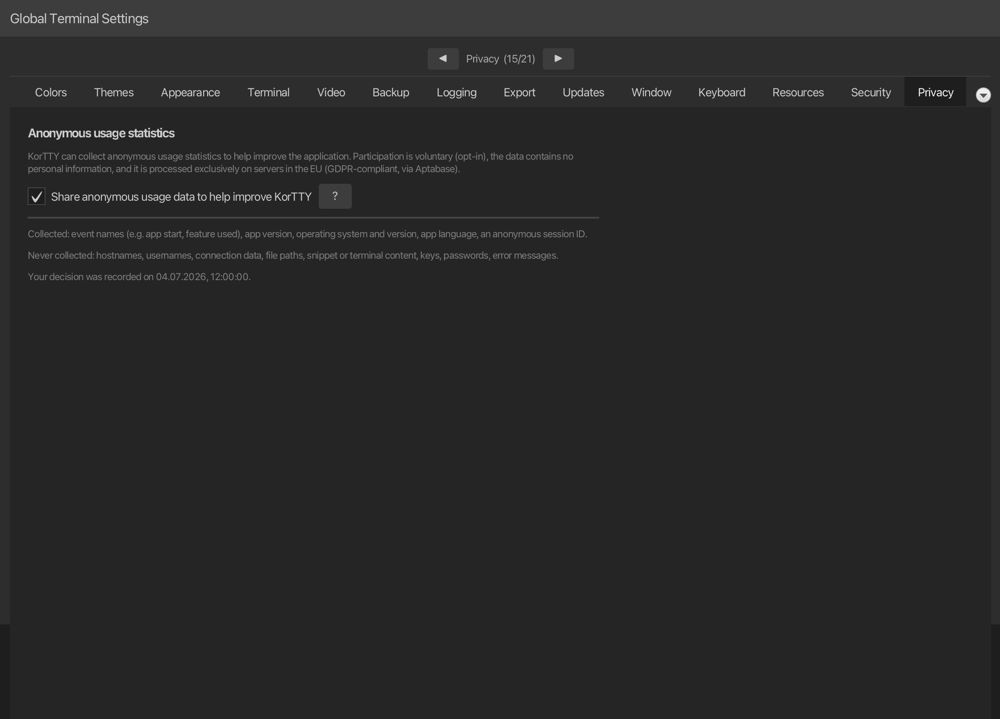

Anonyme Daten zur Applikationsoptimierung¶
korTTY kann anonyme Nutzungsstatistiken sammeln, um zu entscheiden, welche Funktionen es wert sind, verbessert zu werden, und um Abstürze und häufige Fehler zu finden. Dies ist völlig optional und kann jederzeit aktiviert oder deaktiviert werden. Beim ersten Start ist das Kontrollkästchen im Master-Passwort-Setup vorausgewählt. Wenn Sie also bestätigen, dass der Dialog unverändert ist, wird die Erfassung gestartet. Deaktivieren Sie das Kontrollkästchen dort oder schalten Sie es später aus, und es wird nichts erfasst.

Übersicht¶
- Ihre Entscheidung, einmalig. Vor Ihrer Bestätigung wird nichts erfasst. Gefragt werden Sie einmal, zusammen mit der Einrichtung des Master-Passworts beim ersten Start – dort ist das Kontrollkästchen vorausgewählt. Vorhandene Installationen werden nach der Freischaltung einmalig abgefragt; dort gilt jedes Wegklicken als „Nein“.
- Anonym. Es wird kein Konto, kein Login und keine dauerhafte Gerätekennung übertragen.
- Widerruflich. Sie können Ihre Entscheidung jederzeit unter Einstellungen → Datenschutz ändern. Wenn Sie die Funktion deaktivieren, wird die Erfassung sofort gestoppt und alle noch nicht gesendeten Daten werden verworfen.
Was gesammelt wird¶
| Daten | Beispiel |
|---|---|
| Ereignisnamen | App-Start, verwendete Funktion (z. B. ein Tool geöffnet, ein Backup erstellt) |
| Aggregierte Anzahl und Flags | Anzahl der geöffneten Terminal-Tabs, ob AI aktiviert ist |
| App-Version | 2.5.1 |
| Betriebssystem und Version | macOS 15, Windows 11, Linux |
| App-Sprache | de, en |
| Eine anonyme Sitzungs-ID | eine Zufallszahl, die bei jedem Start und nach einer Stunde Inaktivität neu generiert wird |
Die Sitzungs-ID ist keine dauerhafte Kennung: Sie wird jedes Mal neu generiert und kann bei jedem Start nicht auf Sie zurückgeführt werden.
Terminalfunktionen¶
Einige Terminalfunktionen melden, wie sie verwendet werden, und zwar nur mit Schaltern, groben Anzahlen und festen Namen. Anzahlen werden auf 0, 1, 2, 3, 5, 10 oder 20 abgerundet, sodass sieben Bereiche als 5 gemeldet werden.
| Ereignis | Gesendet, wenn | Daten |
|---|---|---|
command_palette_used |
eine Zeile der Befehlspalette ausgeführt wird | die Art der Zeile (action, tab, connection oder snippet) und ob die Suche mit einem Bereichspräfix wie > oder @ begonnen hat |
terminal_highlight_applied |
ein Bereich einen anderen Regelsatz für die Hervorhebung anzeigt | die ID eines eingebauten Regelsatzes oder custom bzw. none und woher die Auswahl kam (Menü, Tastenkürzel, Verbindung oder Standard) |
multi_exec_changed |
Sie Bereiche zu Multi-Exec hinzufügen, sie entfernen oder Multi-Exec beenden | ob Multi-Exec noch aktiv ist, und die gerundete Anzahl der beteiligten Bereiche, Tabs und Fenster |
session_restored |
die vorherige Sitzung wieder geöffnet wird | die Einstellung Sitzungswiederherstellung (ask, auto oder off), ob das Menü, die Leiste beim Start oder die automatische Wiederherstellung sie geöffnet hat, und die gerundete Anzahl der Fenster und Tabs |
session_isolation |
eine isolierte oder Inkognito-Terminal-Sitzung verbindet sich | die angeforderte Isolationsstufe (none, process, sandbox), der erreichte Zustand (none, process, sandboxed, degraded), die Betriebssystemfamilie und ob der Tab inkognito ist |
Der Suchtext, die Namen von Befehlen, Tabs, Verbindungen, Snippets und Regelsätzen, die Muster und alles, was in die Bereiche eingegeben wird, werden nie gesendet. Änderungen auf den Einstellungsseiten werden als Name der Einstellung gemeldet, bei Schaltern und Auswahlfeldern mit dem neuen Wert; bei den Buchstaben und Mustern der Schnellauswahl und bei neu belegten Tastenkürzeln nur, ob Sie sie geändert haben.
KI-Chat-Codeblöcke¶
| Ereignis | Gesendet, wenn | Daten |
|---|---|---|
ai_code_block_action |
Einfügen oder Ausführen wird auf einem Codeblock eines KI-Chats verwendet | insert oder run und ob die Aktion mit sent, cancelled (die Ausführen-Bestätigung wurde abgelehnt) oder refused (die Richtlinie, der Block oder der Bereich ließ es nicht zu) endete |
Der Block, seine Sprache, der Befehl, der Bereich, der Tab, der Host und der Grund einer Ablehnung werden nie gesendet.
Steuerungs-API und MCP-Clients¶
Wenn ein Programm die Steuerungs-API verwendet, meldet korTTY, welche Methoden verwendet werden und welche Art von Client sie verwendet hat. Ein KI-Assistent, der über kortty-cli mcp verbunden ist, wird zusätzlich nach Tool und nach dem Ausgang des Aufrufs gemeldet. Jedes Ereignis wird höchstens einmal pro Methode bzw. pro Tool und Ausgang gesendet, solange korTTY läuft; die Anzahl der Aufrufe fließt in die regelmäßige Nutzungszusammenfassung ein.
| Ereignis | Gesendet, wenn | Daten |
|---|---|---|
control_api_used |
eine Methode der Steuerungs-API wird in diesem Lauf zum ersten Mal verwendet | der Methodenname, z. B. pane.read, und die Art des Clients: cli für kortty-cli, mcp für einen MCP-Client, other für jedes andere Programm |
mcp_tool_called |
ein Aufruf eines MCP-Clients endet auf eine Weise, die in diesem Lauf noch nicht gemeldet wurde | das Tool (pane_list, pane_read, pane_wait_output, tab_list, agent_list, pane_send_text, pane_run, pane_send_keys oder other) und der Ausgang: ok, refused (ausgeschaltet, nicht erlaubt oder in diesem Bereich nicht möglich), denied (Sie haben abgelehnt, oder korTTY konnte nicht fragen), timeout (niemand hat rechtzeitig geantwortet, oder eine Wartezeit ist abgelaufen) oder failed (jeder andere Fehler) |
Der Name des Clients, Bereichs-IDs, Tool-Argumente, der gelesene oder eingegebene Text und Ihre Antworten werden niemals gesendet.
SFTP-Übertragungen¶
Wenn ein SFTP-Manager-Tab geöffnet wird, gibt ein Ereignis an, ob er die Sitzung eines Terminals teilt. Wenn ein Upload oder Download im SFTP-Manager abgeschlossen ist, gibt ein Ereignis an, wie er verlaufen ist. Dateizahlen werden auf 0, 1, 2, 5, 10, 50, 100 oder 1000 abgerundet. Wenn korTTY aufhört, eine Datei zu beobachten, die Sie in einem externen Editor (auch als root) bearbeitet haben, gibt ein Ereignis an, wie die Bearbeitung endete; die Zahl der Uploads wird auf 0, 1, 2, 5, 10 oder 50 abgerundet.
| Ereignis | Gesendet, wenn | Daten |
|---|---|---|
sftp_opened |
ein SFTP-Manager-Tab wird geöffnet | ob er die SSH-Sitzung eines Terminalbereichs oder eine eigene Anmeldung verwendet |
sftp_transfer_batch |
ein Upload- oder Download-Stapel (ein Klick auf eine Schaltfläche oder ein Ablegen) ist abgeschlossen | upload oder download, die gerundete Anzahl der Dateien, ob er mit done, partial, failed oder cancelled endete, ob eine Datei eine Teildatei fortgesetzt hat und wie viele Dateien gleichzeitig kopiert wurden |
sftp_remote_edit |
korTTY beendet die Beobachtung einer mit In externem Editor bearbeiten oder Als root bearbeiten (sudo)... geöffneten Datei | external oder sudo, ob sie mit stopped, conflict, disconnected, closed oder failed endete, und die abgerundete Zahl der Uploads |
Datei- und Ordnernamen, Pfade, Servernamen, Editorbefehle, sudo-Passwörter und Dateigrößen werden niemals gesendet.
JobScheduler-Benachrichtigungen¶
Wenn der JobScheduler eine Desktop-Benachrichtigung für einen Joblauf anzeigt oder eine an ein Webhook-Ziel sendet, gibt ein Ereignis an, wie es ausgegangen ist.
| Ereignis | Gesendet, wenn | Daten |
|---|---|---|
job_notification_sent |
eine Lauf-Benachrichtigung wird auf dem Desktop angezeigt oder für ein Webhook-Ziel zugestellt, abgelehnt oder blockiert | desktop oder webhook, das Payload-Format (slack, teams, generic oder none), ob sie mit ok, failed oder blocked endete, und die Anzahl der Zustellversuche (0 bis 3) |
Job- und Zielnamen, Webhook-URLs und Hosts, Laufstatus-Texte sowie alles aus der Ausgabe des Laufs werden niemals gesendet. Ein mit Test senden verschickter Test wird nicht gezählt.
Was niemals gesammelt wird¶
korTTY übermittelt niemals Folgendes:
- Hostnamen, IP-Adressen, Benutzernamen oder Verbindungsnamen und -adressen
- Dateinamen, Pfade oder Verzeichnisinhalte
- Snippet-Inhalt, Terminalausgabe oder KI-Eingabeaufforderung und Chat-Text
- Passwörter, SSH-Schlüssel, GPG-Schlüssel oder API-Schlüssel
- Fehlermeldungen (nur die Art des Fehlers und die korTTY-Klasse, in der er aufgetreten ist)
Wohin die Daten gehen¶
Nutzungsstatistiken werden verarbeitet von Aptabase, ein Open-Source-Analysedienst, bei dem der Datenschutz an erster Stelle steht. korTTY verwendet die EU-Region von Aptabase (eu.aptabase.com), sodass die Daten unter Einhaltung der DSGVO auf Servern in der Europäischen Union verarbeitet werden. Siehe die Aptabase-Datenschutzrichtlinie für Einzelheiten.
Wenn keine Verbindung verfügbar ist, werden Ereignisse lokal in ~/.kortty zwischengespeichert und später – auch nach einem Neustart – gesendet, sodass bei einem vorübergehenden Verbindungsausfall nichts verloren geht oder blockiert wird. Dieser Offline-Cache enthält nur dieselben anonymen Ereignisse. Es wird verworfen, wenn Sie sich abmelden, und Ereignisse, die älter als drei Tage sind, werden gelöscht.
Warum korTTY es sammelt¶
Das Ziel besteht darin, korTTY mit echten, anonymen Beweisen statt mit Vermutungen zu verbessern:
- Priorisieren Sie Funktionen, die tatsächlich genutzt werden, und entfernen Sie diejenigen, die niemand nutzt.
- Finden Sie Abstürze und häufige Fehler, damit diese in der nächsten Version behoben werden können.
- Messen Sie, ob Veröffentlichungen die Stabilität im Laufe der Zeit verbessern.
Ihre Auswahl¶
- Erster Start: Der Einrichtungsdialog für das Master-Passwort enthält das vorausgewählte Kontrollkästchen und diese Informationen; wer den Haken vor dem Klick auf Einrichten entfernt, lehnt ab.
- Jederzeit: Öffnen Sie Einstellungen → Datenschutz, um die Erfassung zu aktivieren oder zu deaktivieren. Die gleiche Seite verweist auf dieses Kapitel.
- Durch Deaktivieren wird die gesamte Erfassung sofort gestoppt und noch nicht gesendete Daten werden verworfen.

Ihr Einwilligungsdatensatz¶
Ihre Entscheidung und das Datum, an dem sie getroffen wurde, werden als Einwilligungsprotokoll lokal in ~/.kortty/global-settings.xml (siehe Konfigurationsdateien) gespeichert. Wenn eine zukünftige korTTY-Version ändert, was gesammelt wird, werden Sie erneut gefragt, sodass Ihre Auswahl immer den aktuellen Umfang widerspiegelt.